Práctica 4: Convolución y correlación
- Cruz Meneses Jorge Angel
- González Jiménez Daniel
- Lazcano Saavedra Miguel Salomón
- Rivera Ortiz Raúl Alejandro
Contents
Objetivos
- Conocer métodos básicos de integración numérica
- Manipulación de instrucciones en MATLAB
- Simular convoluciones y correlaciones de señales continuas
Introducción
Los metodos numericos constituyen tecnicas mediante la cuales es posible formular problemas matematicos, de tal manera que puedan resolverse utilizando operaciones aritmeticas.
- Teorema fundamental del calculo
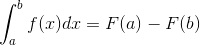
Si tenemos:
- Una función integrable
- 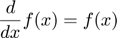 , resulta ser que
Encontrar F es dificil, para esto u tilizamos tecnicas de integración como cambio de variable, integración por partes, susitución trigonometrica, etc.
Ejemplo:
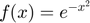
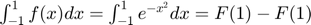
Esta antiderivada no existe, por lo que tenemos que hacerlo por otro camino
Nos aproximamos por un polinomio, tal que evaluando el polinomio o la funcion original sea casi la misma altura, de este modo si integramos el polinomio nos aproximaremos a lo mismo que integrando la funcion.
Tomemos un polinomio constante: 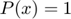
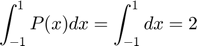
Entonces tenemos:
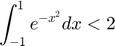
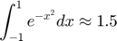
Al ver las graficas de las funciones:
x =-2:0.01:2; y1= @(x) exp(-x.^2).*(x>=-1 & x<1); y2= @(x)1.*(x>-1 & x<1); plot(x,y1(x),'r',x,y2(x),'b--'); grid on; axis([-1.5 1.5 -.5 1.5]);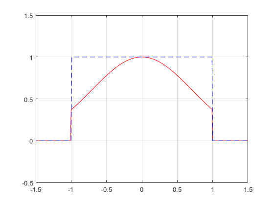
- REGLA DEL TRAPECIO (n = 1)
Esta se utiliza para un polinomio de grado 1, es decir que aproximamos nuestra área bajo la curva mediante la siguiente fórmula :
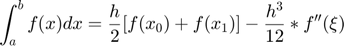
donde:
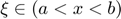
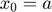
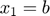
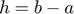 (el paso)
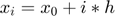
También podemos ver que el "error" que le restamos a la fórmula es:
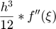
Entonces si tenemos un polinomio de grado 1, su segunda derivada evaluada en cualquier punto en el intervalo
será 0. Por lo tanto el error en este caso será 0.
Entonces, en conclusión las señales con polinomios de grado 1 no tendrán "error". Pero si comenzamos a dar funciones o señales con curvas mucho más marcadas o que el polinomio sea cada vez más grande (en grado) tendremos un mayor error en la aproximación.
- REGLA DE SIMPSON (n = 2)
En este caso tendremos 3 puntos : Comenzamos con en primer punto 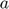. Despues tendremos el segundo que sería 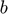 y al final un tercer punto que en este caso es 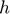


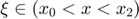
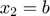
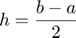 (el paso)
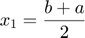
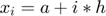
También podemos ver que el "error" que le restamos a la fórmula es:
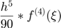
Es decir, que nuestro error depende de la cuarta derivada de la función y de el valor de el paso en nuestra aproximación.
- REGLA DE LOS 3 OCTAVOS DE SIMPSON (n = 3)
En este caso tendremos 4 puntos en la evaluación de la función o de la señal. La fórmula de la regla de los 3 octavos de simpson está dada por:
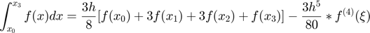
donde:
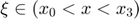
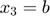
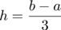
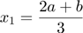
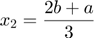
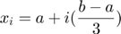
Estos puntos son los que necesitamos para hacer nuestra aproximación del área bajo la cuerva.
El "error" en este caso esta dado por:
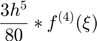
Es decir que el "error" en la aproximación depende de la cuarta derivada de la función y de el paso ( ).
- REGLA COMPUESTA DEL TRAPECIO Esta tiene como fianalidad de hacer la regla del trapecio, pero con un múmero mayor de trapecios, de tal manera que el "error" sea cada vez más pequeño en el inetervalo 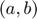
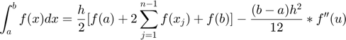
donde:

En este caso el "error" está dado por:
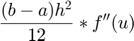
- REGLA COMPUESTA DE SIMPSON
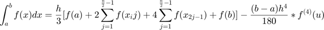
donde
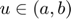
- Cuadratura Gaussiana

Las formulas anteriores aproximan la integral con las evaluaciones de la funcion en determinados puntos por determinadas constantes, por lo que son formulas de cuadratura.
Asi como se utilizaba en el metodo de la regla de simpson compuesta y la regla del trapecio, los cuales utilizan polinomios de lagrange, es decir, buscar cual es el polimonio mas grande que se puede encontrar para aproximarme a un grado de presicion. Sin embargo en este metodo utilizaremos polinomios de Legendre
Aqui podemos observar los primeros 5 polinomios de legendre y sus respectivsa graficas en el intervalo de -1 a 1


- Si Pn es un polinomio de Legendre de grado n entonces sus raices son numeros reales

Por lo que sabemos que

Asi como se aplicó en simpson y en trapecio,que sabemos que tienen presicion definida, como lo es el 3 en la regla de simpson y el 1 en el trapecio. Es decir, que si la funcion es de grado 3 o 1 respectivamente, la funcion deja de aproximarse y se convierte exactamente en la funcion, sin grado de error. Se aplica la misma logica con la cuadratura Gaussiana

Sin embargo no tenemos un margen de error, por lo que se cuenta con tablas con las que cuentan ya con valores predertminados con las que tenemos que evaluar nuestra funcion para asi poderlas aproximar dependiendo el grado de la funcion.
Por ultimo ya contamos con la fucion en -1 a 1, sin embargo no siempre se busca ingtegrar en dicho ontervalo, por lo que haciendo un cambio de variable nos arroja esta dicha formula generica.

Desarrollo
A continuación, se presentan una serie de problemas de la Parte 2 del Curso de Señales y Sistemas, los cuales se les da resolución mediante código de MATLAB® y comprobamos con resultados obtenidos previamente.
- Problema 1
- Para el PR04 reporte la grafica de la simulacion numerica de la convolucion y compare con el resultado analitico que obtuvo para el problema 1.
Realiza la convolucion de las siguientes señales:
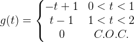
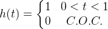
g = @(t) (1-t).*(t>=0 & t<1)+(t-1).*(t>=1&t<2); %Funcion fija h = @(t) (1).*(t>=0&t<1);%Funcion movil graficas(g,h,-1,3,-.5,1.5);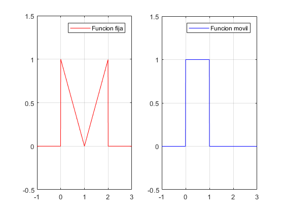
Ambas funciones se pueden visualizar en las primeras graficas que se muestran despues del codigo ejecutable.
g = @(t) (1-t).*(t>=0 & t<1)+(t-1).*(t>=1&t<2); %Funcion Fija h = @(t) (1).*(t>=0&t<1); %Funcion movil hg = @(t) (((-(t.^2)./2)+t).*(t>=0 & t<1) + ((t.^2)-(3.*t)+(5/2)).*(t>=1 & t<2) + ((-(t.^2)/2)+(2.*t)-(3/2)).*(t>=2 & t<3)); convconm(g,h,hg,-1,4,-.5,1.5)
La variable h representa la primer funcion, mientras que la g es otra funcion, estas dos funciones son las que van a realizar la convolucion, mientras que la funcion hg es la solucion analitica de la convolucion h(t)*g(t).
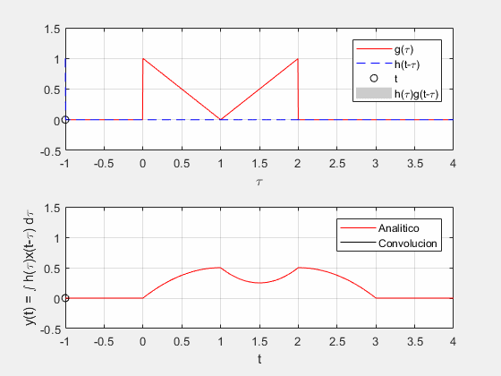
Donde la solucion analitica de la convolucion una vez hecho las integrales de cada caso son es la siguiente:
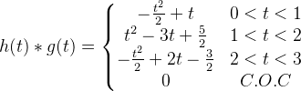
- Problema 2
- Para el PR04 reporte la grafica de la simulacion numerica de la convolucion y compare con el resultado analitico que obtuvo para el problema 3.
Realiza la convolucion de las siguientes señales:
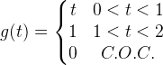
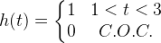
g = @(t) (t).*(t>=0 & t<1)+(1).*(t>=1&t<2); %Funcion fija h = @(t) (1).*(t>=1 & t<3);%Funcion movil graficas(g,h,-1,3.5,-.5,1.5);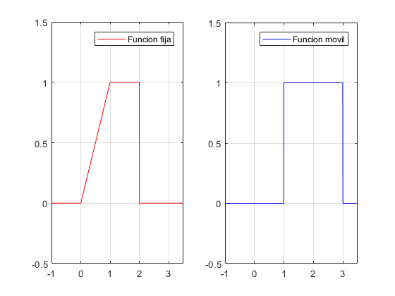
Ambas funciones se pueden visualizar en las graficas anteriores.
g = @(t) (t).*(t>=0 & t<1)+(1).*(t>=1&t<2); %Funcion fija h = @(t) (1).*(t>=1 & t<3);%Funcion movil hg = @(t) (((t.^2)./2)-t+1/2).*(t>=1 & t<2) + (t-3/2).*(t>=2 & t<3) + ((-(t.^2)/2)+(3.*t)-3).*(t>=3 & t<4) + (-t+5).*(t>=4 & t<5); convconm(g,h,hg,-1,5.5,-.5,2)
La variable h representa la primer funcion, mientras que la g es otra funcion, estas dos funciones son las que van a realizar la convolucion, mientras que la funcion hg es la solucion analitica de la convolucion h(t)*g(t).
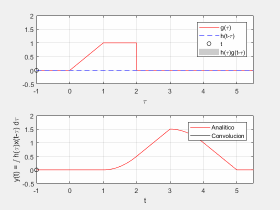
Donde la solucion analitica de la convolucion una vez resuelta es la siguiente:
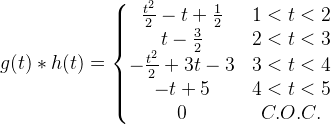
- Problema 3
- Para el PR06 reporte la grafica de la simulacion numerica de la convolucion y compare con el resultado analitico que obtuvo para el problema e).
Realiza la autocorrelacion de:
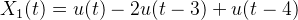
Tenemos por definicion que:
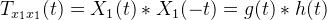
Por lo que las funcion (funcion fija) y (funcion movil) quedan de la siguiente forma:d
g = @(t) 1.*(t>=0 & t<3)-1.*(t>=3&t<4);%Funcion fija h = @(t) -1.*(t>=-4&t<-3)+1.*(t>=-3&t<0);%Funcion movil graficas(g,h,-4.5,4.5,-1.5,1.5);
Ambas funciones se pueden visualizar en las primeras graficas que se muestran despues del codigo ejecutable.
g = @(t) 1.*(t>=0 & t<3)-1.*(t>=3&t<4);%Funcion fija h = @(t) -1.*(t>=-4&t<-3)+1.*(t>=-3&t<0);%Funcion movil hg = @(t) (-t-4).*(t>=-4 & t<-3) + (t+2).*(t>=-3 & t<-1) + (3*t+4).*(t>=-1 & t<0) + (-3*t+4).*(t>=0 & t<1) + (-t+2).*(t>=1 & t<3) + (t-4).*(t>=3 & t<4); convconm(g,h,hg,-4.5,4.5,-1.5,4.5)
La variable g representa la primer funcion la cual va a ser la funcion, fija mientras que la h es otra funcion, estas dos funciones son las que van a realizar la convolucion, mientras que la funcion hg es la solucion analitica de la autocorrelacion de
Donde la solucion analitica de la autocorrelacion de , la cual es lo mismo que la convolucion de g(t)*h(t). La solucion analitica quedo de la siguiente forma:
- Problema 4
- Para el PR06 reporte la grafica de la simulacion numerica de la convolucion y compare con el resultado analitico que obtuvo para el problema f).
Realiza la correlacion de :
Tenemos por definicion que:
Por lo que las funcion (funcion fija) y (funcion movil) quedan de la siguiente forma:d

g = @(t) 1.*(t>=0 & t<2)-1.*(t>=2&t<4);%Funcion fija h = @(t) -1.*(t>=-4&t<-3)+1.*(t>=-3&t<0);%Funcion movil graficas(g,h,-4.5,4.5,-1.5,1.5);
Ambas funciones se pueden visualizar en las graficas anteriores.
g = @(t) 1.*(t>=0 & t<2)-1.*(t>=2&t<4);%Funcion fija h = @(t) -1.*(t>=-4&t<-3)+1.*(t>=-3&t<0);%Funcion movil hg = @(t) (-t-4).*(t>=-4 & t<-3) + (t+2).*(t>=-3 & t<-2) + (3*t+6).*(t>=-2 & t<-1) + (-t+2).*(t>=-1 & t<0) + (-3*t+2).*(t>=0 & t<1) + (-t).*(t>=1 & t<2) + (t-4).*(t>=2 & t<4); convconm(g,h,hg,-4.5,4.5,-2.5,3.5)
La variable g representa la primer funcion, la cual va a ser la funcion fija mientras que la h es la otra funcion, la cual va a ser la funcion movil, estas dos funciones son las que van a realizar la convolucion, mientras que la funcion hg es la solucion analitica de la correlacion de
Donde la solucion analitica de la correlacion de , la cual es lo mismo que la convolucion de g(t)*h(t). La solucion analitica quedo de la siguiente forma:
Anexos
Funcion para realizar convoluciones.
function convconm(g,h,hx,p1,p2,ymin,ymax) filename = 'Animaciones.gif'; v = figure; % Se crea una figura para hacer las gráficas axis tight manual % this ensures that getframe() returns a consistent size dtau = 0.005; % Base de los rectangulos para realizar la integral tau = p1:dtau:p2; % Intervalo de visualización del resultado (Depende de la convolucion) ti = 0; % Indice para el vector de resultados tvec = p1:.1:p2; % traslaciones de t, cuantas integrales se calulan (Depende de la convolucion) y = NaN*zeros(1, length (tvec)); % Resultados de acuerdo a cuantos t (no se mueve) for t = tvec % Cantidad de traslaciones ti = ti+1; % Indice para guardar el resultado (indice del tiempo) xh = h(t-tau).*g(tau); % resultado de la multiplicación (no se mueve) lxh = length(xh); % longitud del resultado y(ti) = sum(xh.*dtau); % Base por altura, aproximación de la integral %%Ediciones de la grafica subplot (2,1,1), % gráfica de 2 x 1 (primera) plot(tau, g(tau), 'r-', tau, h(t-tau), 'b--', t, 0, 'ok'); %graficas axis ([tau(1) tau(end) ymin ymax]); % límites de los ejes grid on; % malla patch([tau(1:end-1); tau(1:end-1); tau(2:end); tau(2:end)],... [zeros(1,lxh-1);xh(1:end-1);xh(2:end);zeros(1,lxh-1)],... [.8 .8 .8], 'edgecolor', 'none'); xlabel('\tau'); % Texto del eje X legend('g(\tau)', 'h(t-\tau)','t','h(\tau)g(t-\tau)')% Caja de Texto subplot (2, 1, 2) % gráfica de 2 x 1 (segunda) plot (tau, hx(tau), 'r', tvec, y, 'k', tvec (ti), y(ti), 'ok'); %% Bolitas en la grafica legend('Analitico','Convolucion'); xlabel ('t'); ylabel ('y(t) = \int h(\tau)x(t-\tau) d\tau'); axis ([tau(1) tau(end) ymin ymax]); % límites del eje grid on; % malla drawnow; % efecto de movimiento continuo frame = getframe(v); im = frame2im(frame); [imind,cm] = rgb2ind(im,256); % Write to the GIF File if t == p1 imwrite(imind,cm,filename,'gif', 'Loopcount',inf); else imwrite(imind,cm,filename,'gif','WriteMode','append'); end end end
Los parametros representan:
- g: Es la funcion fija de la convolucion.
- h: Es la funcion movil de la convolucion.
- hx: Es el resultado analitico que se obtuvieroon previamente al realizar la practica, el cual se va a graficar.
- p1: Es el punto limite minimo en x
- p2: Es el punto limite maximo en x
- ymin: Es el punto limite minimo en y
- ymax: Es el punto limite maximo en x
Funcion para realizar graficas de las funciones con las cuales se van a realizar las convoluciones.
function graficas(g,h,p1,p2,ymin,ymax) t = p1:.005:p2; figure (1); subplot(1,2,1); plot(t,g(t),'r-'); grid on; legend('Funcion fija'); axis ([t(1) t(end) ymin ymax]); subplot(1,2,2); plot(t,h(t),'b-'); grid on; legend('Funcion movil'); axis ([t(1) t(end) ymin ymax]); end
- g: Es la funcion fija de la convolucion.
- h: Es la funcion movil de la convolucion.
- p1: Es el punto limte minimo en x.
- p2: Es el punto limite maximo en x.
- ymin: Es el punto limite minimo en y.
- ymax: Es el punto limite maximo en y.